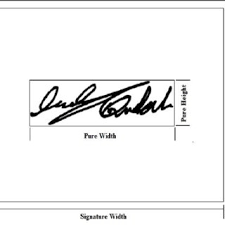

The Cloud-Based Murrel Gene Annotation Hub (CMGAH) was conceptualized upon completion of the transcriptome sequencing in 2023 with the aim of developing the resource database of cloud-based architecture. The database provides accurate and integrated gene related information. The database was developed with the view to provide information about most comprehensive part of the genome. The database contains various information for transcriptome sequence, functional annotation, microsatellite markers, DEGs and pathway information. The database is freely available resource provides researchers/scientists a portal to search, browse and query data to facilitate functional and applied OMICS studies in Murrel species.

- Dr. Principal Investigator